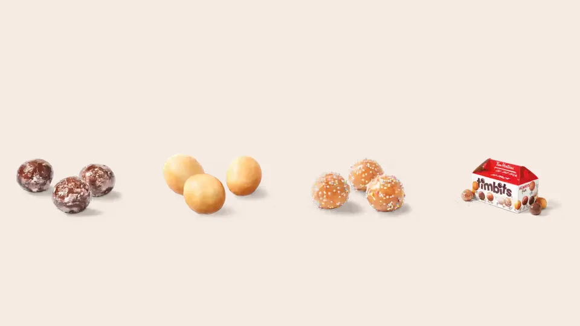

Unofficial fan guide - not affiliated with Tim Hortons
Tim Hortons' Timbits and Dunkin' Munchkins compared: history, size, calories, flavours, box sizes and where to buy them.
Full Menu / Blog / Timbits vs Munchkins

Timbits and Munchkins are both bite-sized donut holes. Timbits are Tim Hortons' version, launched in Canada in 1976. Munchkins are Dunkin's, launched in the U.S. in 1973. They differ in who sells them, where you can buy them, the flavour lineups and how they are made, not in the basic idea.
They are the same type of food, sold under two brand names. Each is a small ball of donut dough, cake or yeast, finished with a glaze, sugar, coconut or a filling. "Timbits" is a Tim Hortons trademark and "Munchkins" is a Dunkin' trademark, so the names belong to rival chains rather than to two different foods.
The confusion is mostly about where you grew up. In Canada and in U.S. towns with Tim Hortons, people say Timbits. In the northeastern U.S., where Dunkin' dominates, people say Munchkins. Everyone else usually says "donut holes". In French-speaking Canada the generic term is trous de beigne, though francophone Tim Hortons restaurants still use the Timbits name.
The quickest way to see the differences is in one table. Nutrition figures come from Tasting Table's 2025 weigh-in and Tim Hortons' published ranges, and they vary by flavour.
| Timbits | Munchkins | |
|---|---|---|
| Chain | Tim Hortons | Dunkin' |
| Launched | April 1976, Canada | 1973, U.S. (some sources say 1972) |
| Name comes from | "Tidbit" plus founder Tim Horton | The Munchkins in The Wizard of Oz |
| Typical weight | 14 g (Honey Dip) to 21 g (Chocolate Toasted Coconut) | About 15.5 g |
| Calories each | About 45 to 90, depending on flavour | About 60 to 70 for a glazed Munchkin |
| Four pieces vs one donut | 4 Honey Dip Timbits: 56 g, 180 cal; 1 Honey Dip Donut: 62 g, 190 cal | 4 Munchkins: 62 g, 280 cal; 1 glazed donut: 64 g, 269 cal |
| Common box sizes | 10, 20 and 50 | 10, 25 and 50 |
| Where to buy | Canada, parts of the U.S. and other Tim Hortons markets | U.S. and other Dunkin' markets; returning to Canada |
The table shows one useful rule of thumb. About four donut holes add up to one regular donut, so a 10-pack is roughly two and a half donuts' worth.
Munchkins came first, by three years. Both were the answer to the same question: what to do with the dough left over from cutting the hole out of a ring donut.
Dunkin' launched Munchkins in 1973, according to Wikipedia and Flavour Network; some histories give 1972. Tasting Table credits Edna Demery, a store manager in Hartford, Connecticut, with frying leftover donut holes and selling them instead of throwing them away. The company's CEO named them after the small characters in The Wizard of Oz (1939). Dunkin' now sells about 800 million Munchkins a year.
Tim Hortons introduced Timbits in April 1976. The name is a play on "tidbit", a small tasty bite, combined with the name of the chain's co-founder, hockey player Tim Horton. Tim Hortons marked the 50th anniversary in 2025 and said it sold more Timbits in Canada that year than in any year on record.
Neither chain still relies on the actual hole cut from a donut. Wikipedia notes that Dunkin' has made Munchkins separately from its full-size donuts since at least 2021, and Timbits are shaped with their own cutter, which makes them larger than the hole in a Tim Hortons donut.
The bigger difference is where the baking happens. Since 2003, most Tim Hortons donuts and Timbits have been par-baked at a central bakery in Brantford, Ontario, flash-frozen and shipped to restaurants, which finish them in their ovens. Wikipedia's Timbits entry describes Timbits as baked rather than fried for this reason. Tim Hortons calls the system "Always Fresh"; critics, including franchisees who sued over it in 2008, argued it changed the taste, and the case was dismissed. Our guide to whether Tim Hortons donuts are baked or fried explains the full process.
Timbits have the deeper lineup in Canada. Tim Hortons' July 2024 Canadian allergen guide lists 15 Timbits, and new filled flavours keep arriving.
The July 2024 guide lists Birthday Cake, Chocolate Glazed, Chocolate Snow Ball, Chocolate Toasted Coconut, Honey Dip, Old Fashioned Glazed, Old Fashioned Plain, Old Fashioned Sugar, Snow Ball, Sour Cream Glazed, Sour Cream Plain, Sour Cream Sugar, Strawberry, Toasted Coconut and Venetian Cream. For the 50th anniversary in 2025, Tim Hortons added filled Blueberry Cheesecake and Crème Brûlée Timbits. Chocolate Glazed has been Canada's most popular classic Timbit for several years running, according to Tim Hortons.
Limited editions come and go. Tim Hortons launched Timbits Cereal in 2020 and the Justin Bieber "Timbiebs" flavours in November 2021. Retired flavours such as Cherry Cake and Chocolate Peanut Crunch are tracked on our discontinued items page.
Dunkin' offers more than ten Munchkins varieties in the U.S., including glazed, glazed chocolate, glazed blueberry, glazed old-fashioned and jelly-filled. In 2022 it released its first savoury Munchkin, a cornbread flavour. Seasonal editions, such as a 50-piece Halloween bucket in 2024, rotate through the year.
Not yet, as of October 2026. Dunkin' closed its last three Canadian restaurants, all in the Montreal area, in September 2018, after Quebec franchisees won a $16.4 million court judgment against the brand.
That is about to change. In May 2026, Dunkin' owner Inspire Brands signed a master franchise deal with Montreal-based Foodtastic to bring Dunkin' back to Canada. The first location is expected in late 2026 or early 2027, starting in Quebec and Ontario, with a pace of about 50 cafés a year. Munchkins should return with it, though Foodtastic has said the menu will be adapted for Canada, so the flavours may differ from the U.S. list.
Timbits are easier to find in the U.S. than Munchkins are in Canada. Tim Hortons has U.S. restaurants mainly in border states, which our Tim Hortons in the US guide maps out.
It depends on what you value. Timbits win on variety in Canada and on calories per piece: a Honey Dip Timbit is about 45 calories against roughly 60 to 70 for a glazed Munchkin. Munchkins are slightly heavier and richer, closer to a small piece of a full donut.
For a group order, box sizes matter more than taste. Both chains sell a 10 and a 50, and the middle size differs: 20 Timbits or 25 Munchkins. Prices are set by each franchise, so check the Tims app or the Dunkin' app for your local price; our Timbits menu lists current Canadian reference prices. If you are choosing a chain, not just a donut hole, our Tim Hortons vs Dunkin' comparison covers coffee, food and prices.
Yes. Most Timbits contain wheat, milk, egg and soy, and every Timbit in Tim Hortons' July 2024 Canadian guide is marked "may contain" tree nuts and sulphites. Honey Dip, Strawberry and Venetian Cream Timbits list egg and soy as "may contain" rather than "contains". Tim Hortons warns that shared equipment means it cannot rule out cross-contact.
Dunkin' publishes its own allergen information for Munchkins. If you have a food allergy, check each chain's current guide before ordering, because recipes change. See our Timbits menu for the current Canadian flavours.
Yes, Timbits are Tim Hortons' brand of donut holes. They are made with their own cutter rather than from the hole of a ring donut, so they are a little larger than the centre of a Tim Hortons donut.
Munchkins came first. Dunkin' launched them in 1973 and Tim Hortons introduced Timbits in April 1976.
Dunkin's CEO named them after the small characters in The Wizard of Oz. The film came out in 1939, decades before the donut holes.
The name blends "tidbit" with the name of Tim Horton, the hockey player who co-founded the chain. Tim Hortons owns it as a trademark.
About four. Four Honey Dip Timbits weigh 56 g and have about 180 calories, close to one Honey Dip Donut at 62 g and 190 calories.
Between about 45 and 90 calories each, depending on the flavour. A Honey Dip Timbit is at the low end, at about 45 calories.
A glazed Munchkin has about 60 to 70 calories. Filled and heavily glazed flavours run higher.
Chocolate Glazed. Tim Hortons says it has been Canada's most popular classic Timbit for several years in a row.
Yes. Dunkin' signed a deal with Foodtastic in May 2026, and the first Canadian location is expected in late 2026 or early 2027.
The generic French term is trous de beigne, meaning donut holes. Francophone Tim Hortons restaurants still sell them as Timbits.
In Canada, Timbits are sold in assorted boxes of 10, 20 and 50. Tim Hortons also released a limited-edition 50th anniversary box in 2025.
Wikipedia describes Timbits as baked rather than fried, because since 2003 Tim Hortons has par-baked its donuts at a central bakery and finished them in restaurant ovens. Munchkins began as fried leftover donut holes.
This is an independent, unofficial guide. It is not affiliated with, endorsed by, or sponsored by Tim Hortons or Restaurant Brands International. History and nutrition figures come from Wikipedia, Tasting Table, Flavour Network and Tim Hortons' own releases; allergen data from Tim Hortons' July 2024 Canadian allergen guide. Dunkin' and Munchkins are trademarks of their owner. See Sources.